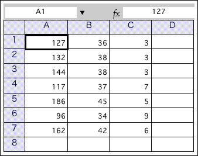
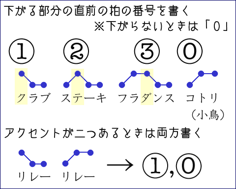
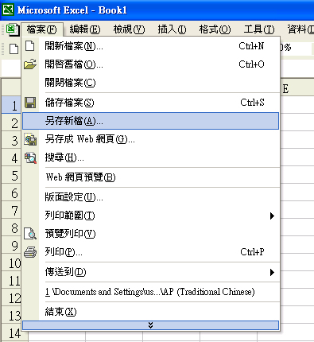
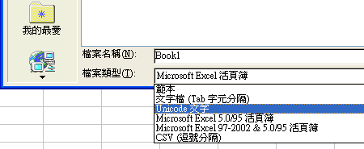
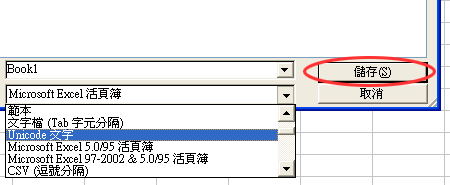

日文文書処理
語彙表の作成
日本語の語彙表を作成しよう。ここでは、主に表計算ソフトを使って、
- 日本語能力試験１〜４級の出題基準に含まれる語彙
- 日本語能力試験の出題基準には含まれないが、新聞やニュースなどによく現れる語彙
の２種類を作成する。
語彙表とは？
語のまとまりを語彙という。語彙の一覧表を語彙表という。語彙表には、語そのものだけでなく、語の意味や発音（読み方）など語に関する情報も示されるのが普通である。
語彙表の例として、日本の国語教科書（小学校）と日本語教科書（初級）の語彙を比較する研究で作成したものを挙げておく【→日本語教科書語彙表（TSV形式・Stuffit圧縮ファイル；92KB）】。
表計算ソフトとは？
語彙表のようなデータは、表計算ソフトを使って作成すると便利である。
数値などのデータを集計・解析するためのアプリケーションソフトウェアapplication softwareが表計算（スプレッドシート）ソフトspread sheet softwareである。旧Lotus Development社（IBM社に買収され、現在はLotus Software）の「Lotus1-2-3（ロータス ワンツースリー）」や米Microsoft社のMicrosoft Excel（マイクロソフト エクセル）などが、代表的な表計算ソフトである。
一般的な表計算ソフトは、数値だけでなくテキストも扱うことができるので、多くのテキストデータを集計するときにも表計算ソフトを使うと便利である。
表計算ソフトで作成されたデータは、そのままでは異なるアプリケーションソフトで利用できない（ことがある）。そのため、データの交換や配布には汎用性の高いTSVやCSVが使われる。
TSVとCSV
「TSV」とは、タブ区切りのデータTab Separated Values、「CSV」とはカンマ区切りのデータComma Separated Valuesという意味である。
実際のTSVは、データをタブtabで区切って表わしたテキストファイルtext fileであり、CSVは、データをカンマcommaで区切ったテキストファイルである。どちらもテキストファイルであるため、テキストエディタtext editorなどで直接編集することができる。
表計算ソフトで扱うデータについて、項目の値と値との間にタブを入れればTSVになり、コンマを入れればCSVになる。また、データの行は改行によって示せばよい。以下の３つのデータは、すべて同じ意味を表すものである。
《TSV》
127 36 3
132 38 3
144 38 3
117 37 7
186 45 5
96 34 9
162 42 6
《CSV》
127,36,3
132,38,3
144,38,3
117,37,7
186,45,5
96,34,9
162,42,6
《表計算ソフトでの表示例》

語彙表の作成
表計算ソフトでは、行と列とによってデータが系列化される。このとき、データの数の多いものを同じ列にまとめるのが普通である。たとえば、100人の学生の英語と中国語のテスト成績を入力する場合は、次のようになるだろう。
日本語能力試験の出題基準に含まれる語を表計算ソフトに入力しよう。また、それぞれの語の発音、アクセント、中国語訳、レベルもあわせて入力しよう。
『発音』は、ひらがなで読みを、『アクセント』は、下がる部分の拍の番号を数字で示してみよう（辞書に載っているものをそのまま書けば良い）。また、『レベル』は日本語能力試験の何級かを数字で示そう。
アクセント表記の方法
日本語のアクセントは、高低の２段階である。また、日本語の語では、［高］から［低］に下がる部分は、必ず１カ所以下（０または１）しかない。そのため、日本語アクセントの表記では、下がる部分の拍の番号を数字で示すのが便利である。

なお、促音の「ッ」、撥音の「ン」、長音の「ー」、拗音を含む「キャ」「キュ」「キョ」など、外来語の「ファ」「フィ」「フェ」「フォ」「ティ」「ヴァ」などはすべて１拍に数える。
新聞などに出ている語で、日本語能力試験の出題基準に含まれないものを見つけて、表計算ソフトに入力しよう（人名や地名などの固有名詞は除く）。また、それぞれの語の発音、アクセント、中国語訳、出典もあわせて入力しよう。
注意：文字化けしないためには
日本語と中国語の両方が含まれるデータは、UnicodeのTSV（またはCSV）で保存する必要がある。
Microsoft Excel（中文版）の場合は、次のようにする（UnicodeのTSVで保存される）。
- 「檔案」メニューから「另存新檔」を選ぶ。

- 保存用のパネルの下の方にある「檔案類型」で『Unicode文字』を選ぶ。

- 「儲存」ボタンを押して保存する。
